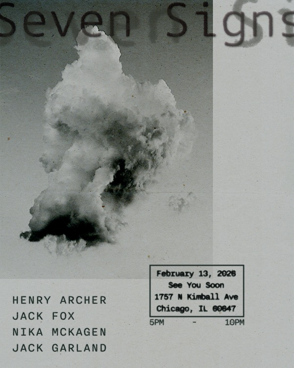

Seven Signs
a one-night-only photography show by Henry Archer, Jack Fox, Jack Garland, and Nika McKagen. Realm Books will be doing a pop up, and we will have negronis and zines (: all proceeds donated to Chicago mutual aid funds

a one-night-only photography show by Henry Archer, Jack Fox, Jack Garland, and Nika McKagen. Realm Books will be doing a pop up, and we will have negronis and zines (: all proceeds donated to Chicago mutual aid funds